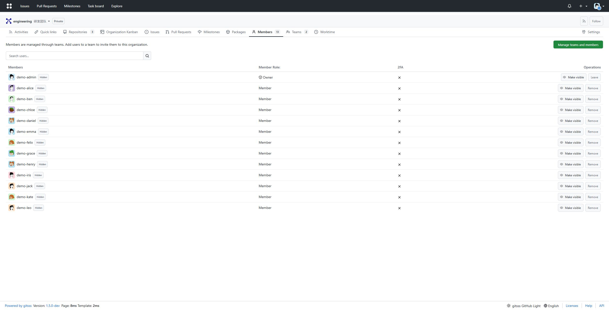
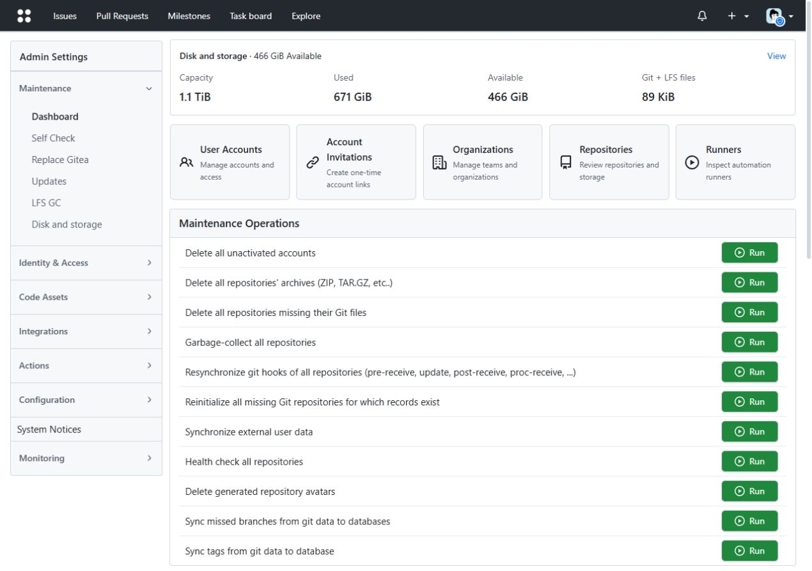
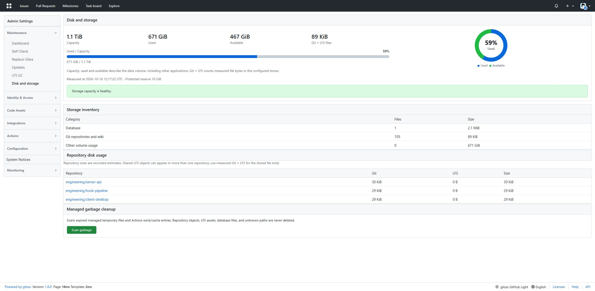

Enterprise organizations
Fresh installations bind 0.0.0.0:5030, disable self-registration and require sign-in. The home page lists organizations visible to the user first; /?view=personal retains the personal dashboard. Team display_name is an editable label, independent of its stable ID, name, URLs and permission.
HTTP import does not preserve passwords, keys, tokens, Actions history/secrets, runner credentials or webhook state. Sites using them need a native database/data takeover in the approved maintenance window. Never share a writable database between two instances.
GitSSS Manual
A self-hosted Git collaboration platform for private networks
GitSSS provides Git hosting, issues, pull requests, reviews, Actions, packages, releases, wiki, and Git LFS. This manual covers installation and a staged migration from a running Gitea instance.
Keep GitSSS on 5030 and Gitea on 3000 throughout evaluation. Add the 3000 listener only after acceptance and an explicitly approved source shutdown.
Install
Native binaries
Download the matching binary and its .sha256 from Releases. Verify the checksum and install Git and Git LFS; JavaScript Actions additionally require Node.js. On Linux or macOS run the command below; on Windows use gitsss.exe. Open port 5030 and create an administrator in the installation form.
chmod +x ./gitsss
./gitsss web --work-path /absolute/path/to/gitsss-dataOffline Docker image
Install from a local image archive. The installer uses --pull never and does not contact a container registry.
Linux or macOS
./install/install.sh \
--image-archive ./gitsss-image.tar \
--install-dir /opt/gitsss \
--port 5030 \
--root-url http://gitsss.example.internal:5030/ \
--initial-admin-user root \
--initial-admin-password 'change-this-password'Linux installs a systemd service by default. macOS installs a per-user launchd agent. Use --no-autostart to skip service registration or --no-start to stage the files without starting the service.
Windows PowerShell
.\install\install.ps1 `
-ImageArchive .\gitsss-image.tar `
-InstallDir C:\gitsss `
-Port 5030 `
-RootUrl http://gitsss.example.internal:5030/ `
-InitialAdminUser root `
-InitialAdminPassword 'change-this-password'On first launch, the installer creates the initial administrator only for an empty data volume. Change its initial password at the first login. Existing HTTP_PORT settings are preserved during upgrades.
Configuration
| Setting | Default | Purpose |
|---|---|---|
HTTP_PORT | 5030 | Primary web, API, and HTTP Git listener |
HTTP_ADDITIONAL_PORTS | empty | Additional HTTP listener ports, comma-separated |
ROOT_URL | http://localhost:5030/ | Public URL used for links and clone URLs |
| SSH port | 2222 | Git over SSH |
| Initial administrator | root / root | Must change the initial password |
For Docker, publish each additional host port to the same container port before enabling it. A container cannot listen on a host port that Compose has not published.
Gitea migration
The HTTP importer reads Gitea through its admin API and Git HTTP. It does not read the source filesystem, database, or Docker volume. Keep the source service and its data unchanged during rehearsal.
1. Protect credentials
Put source and target secrets in private files. Do not pass passwords as command-line arguments or commit secret files.
chmod 600 source.password target.password2. Review a dry-run plan
gitsss import-gitea-http \
--source-url http://gitea.example.internal:3000 \
--source-user site-admin \
--source-password-file source.password \
--target-url http://gitsss.example.internal:5030 \
--target-user root \
--target-password-file target.password \
--repo team/repository-a \
--repo team/repository-bWithout --apply, the importer performs discovery only. Review the output repository list and warnings before proceeding. Start with a few small or representative repositories.
3. Perform the initial import
gitsss import-gitea-http \
--source-url http://gitea.example.internal:3000 \
--source-user site-admin \
--source-password-file source.password \
--target-url http://gitsss.example.internal:5030 \
--target-user root \
--target-password-file target.password \
--repo team/repository-a \
--repo team/repository-b \
--apply --credentials-file imported-users.jsonlInitial import includes selected Git refs and LFS objects, repository settings, supported account and organization permissions, and supported issue, pull request, release, wiki, and package data. Password hashes, 2FA secrets, API tokens, SSH private state, webhooks, and Actions secrets are not available through the source HTTP API. New local accounts receive temporary passwords in the protected credentials file.
Incremental Git sync
After initial import, use --sync-existing-git --apply to update existing repositories without recreating them.
gitsss import-gitea-http \
--source-url http://gitea.example.internal:3000 \
--source-user site-admin \
--source-password-file source.password \
--target-url http://gitsss.example.internal:5030 \
--target-user root \
--target-password-file target.password \
--repo team/repository-a \
--repo team/repository-b \
--sync-existing-git --apply- Git branches, tags, notes, and LFS objects are synchronized.
- Fetches reuse a persistent bare-repository cache in the current user's cache directory. Set
--mirror-cache-dirto place it on a volume with sufficient free space. The cache avoids downloading existing Git objects again and occupies space roughly in proportion to the mirrored Git data. - Source ref deletions are pruned on the target. Fast-forward updates are applied atomically.
- A private per-target checkpoint protects destination changes, including target-only branches. A changed destination is rejected before writes. Reuse the same cache; a missing checkpoint is initialized only when target refs already match the source.
- This repeatable mode does not sync issue or pull request changes, repository metadata, permissions, packages, or releases. Those are part of initial import only.
During evaluation, keep Gitea as the source of truth. Avoid writing to both systems. Git-only sync does not reconcile two-way edits or continuously mirror collaboration metadata.
Two-port evaluation
- Leave Gitea on
3000and start GitSSS on5030with its own data directory. - Import selected repositories and verify their Git refs, LFS objects, and supported collaboration data.
- Keep Gitea on
3000and GitSSS on5030during the evaluation period. Validate several repositories and required product features while both services are available. - Wait for the operator's explicit maintenance-window instruction. To preserve credentials, Actions history and all metadata, freeze writes, stop both application writers, retain a consistent database/configuration backup, and perform native database/data takeover using the original storage paths. The HTTP pilot alone is insufficient.
- Start the accepted GitSSS binary as the sole writer. Validate existing credentials, hooks, SSH keys and runners before enabling production jobs/webhooks. Operating-system SSH credentials and port 22 stay unchanged.
- While GitSSS remains available on
5030, sign in as a site administrator. Open Admin → Gitea takeover and add3000as an alias. - GitSSS keeps
5030open and serves the same application on3000. Its public root URL changes to port3000for clone and web links.
The API equivalent is POST /api/v1/admin/listen-port/alias with JSON {"port":"3000"}. The caller must be a signed-in site administrator, and the requested port must be free. The request binds the listener before it saves the additional port and root URL.
Agent operations
The bundled manual is available from the footer Help link at /help/, with English as its default. Native runners need Git, Git LFS and Node.js for JavaScript actions. Default host labels match the actual OS; production runner labels and credentials are preserved during native takeover. Keep the rehearsal runner disabled on 5030.
python3 tools/agent-ops.py status --url http://gitsss.example.internal:5030 --token-file target.token
python3 tools/verify-git.py --url http://gitsss.example.internal:5030 --token-file target.token --ssh-known-hosts trusted-hostsDispatch and rerun require --apply. Run --actions only on a separate instance containing disposable repositories and a dedicated runner label. No GitHub Actions workflow is enabled for this repository.
Acceptance and rollback
For each pilot repository, compare source and target branch/tag names and commit IDs, verify clones and pushes over HTTP, fetch representative LFS files, and check the imported issues, pull requests, releases, wiki, and packages that the project uses. Also check authentication, permissions, webhooks, Actions runners, backups, and the application features required by your team.
Keep the existing Gitea service and its data directory unchanged until the pilot is accepted. If GitSSS fails evaluation, leave Gitea serving on 3000, remove only the GitSSS candidate service, and retain its data for investigation. A later cutover needs a scheduled write freeze, a final source-to-target sync, and a separate acceptance decision.
GitSSS is licensed under MIT. See the English README or Chinese README.
Rehearsal evidence: 2026-10-16
An independent SQLite snapshot retained all 116 original tables, columns and row IDs (343 to 343), taking about 1.35 seconds. Runtime checks accepted the original admin token, organization/team visibility, four pilot repositories, runner IDs and Actions metadata. Four pilots matched 135 source refs. Disposable real-client checks covered HTTP, SSH, LFS, permissions, pull-request merging and team labels; an isolated native runner completed checkout, shell and artifact upload. Delta checks covered new Git/LFS data, source branch deletion, refusal of independent destination changes and unchanged reruns without cache growth. Production runners and original SSH credentials remain cutover-window checks. Windows local restore paths use proper file: URLs while retaining permission checks and storage locations.
Language, readable themes and organization Kanban
The UI automatically follows the system/browser language supplied in Accept-Language. Login does not persist an automatically detected language as an account preference. The footer and Appearance settings offer Automatic and manual choices. Custom React views follow the page language with Chinese/English strings and English fallback. Light/dark dropdowns use their own text colors; secondary text and Worker captions are more readable. Organization cards open /{org}/-/kanban directly: one shared board, quick tasks, @member assignment, text search, assignee filters and drag-to-change status. No project creation or repository is required. Repository boards and legacy owner projects remain compatible. Only organization members and administrators can access shared cards; creator/owner deletion and same-organization assignment are enforced by the server. Up to 500 matching cards are rendered with a visible limit notice and server search. Extension schema 2 adds org_task without copying Git objects. Preserve trial cards and map organization/user IDs at final takeover; rollback to older binaries needs its database backup. Desktop layouts use the available width; Actions search no longer squeezes an exposed label into its input. Profile settings provide 24 locally embedded DiceBear Adventurer/Lorelei avatars; existing avatars are preserved. Custom uploads are automatically square-cropped, resized and compressed as suitable PNG/JPEG. Transparency stays PNG; GIF uploads use the first frame. Artwork: Lisa Wischofsky, Adventurer CC BY 4.0 and Lorelei CC0, locally rendered using DiceBear 10.6.0.
Parallel instance isolation
Use independent HOME/USERPROFILE and SSH_ROOT_PATH, disable both SSH_CREATE_AUTHORIZED_*_FILE flags, and compare the source authorization file hash before/after acceptance. Disabled SSH must never rewrite system authorization files. Configure distinct session COOKIE_NAME, security COOKIE_REMEMBER_NAME and i18n COOKIE_NAME on parallel instances to avoid cross-port login-cookie collisions. Retain original settings for final native takeover and export any new trial boards before that window.
tools/verify-enterprise.py verifies shared-card permissions and avatar selection/upload with disposable private organizations and accounts, cleaning its own fixtures. Run it only against GitSSS evaluation instances.
One organization workspace
Activity, repositories, board and teams share the same compact header and navigation. Organization switching retains the workspace section, and organization/team menus support display-name and stable-name search. Team changes update activity and repositories in place while preserving repository search and filters, with Back/Forward support. Board creation, editing, deletion and server search stay on the same page; failed requests preserve drafts and current contents. Existing URLs and ordinary form submissions remain compatible.
Homepage quick links
A dedicated Quick links tab offers administrator-managed shared links and per-user personal links. Add, edit and remove multiple entries in place; destinations open in a new tab. Each list supports 32 links, a 120-character name and an HTTP/HTTPS URL up to 2048 bytes. Embedded credentials and other schemes are rejected. Failed saves preserve drafts; stale editors receive a conflict. Desktop dashboards use 16px side gutters.
Links use existing app-state keys enterprise-home-links and personal-home-links-{userID}; no schema or Git/LFS paths change. Private destinations are configured per installation. Export trial links before native takeover and map personal user IDs. See the enterprise operations guide for session/CSRF-protected POST /home-links fields and rollback.
Compact desktop workspace and automatic teams
Activity has repositories on the left, the feed in the center, and CI/CD with published notices on the right. Contribution history starts open and can be collapsed; Quick links has its own tab. The default UI uses 14px text, compact headers/buttons and single-line member rows with 28px avatars, without changing browser zoom.
Organization owners open Settings → Automatic team assignment. Match repository names with Go/RE2 expressions such as ^server- or (?i)-go$, choose teams and preview existing matches. Enabled rules apply in creation/import/fork/template and organization transfer transactions. Matching rules are unioned using existing team permissions. Applying to existing repositories is explicit and repeatable. Disabling/deleting rules or renaming repositories never revokes existing grants. Stable team IDs survive display-name changes; team deletion removes references. Owners/all-repository teams keep their default access.
Limits: 32 rules, 512 bytes per expression, 64 teams per rule. Owner/CSRF checks, same-organization validation and stale revision checks are enforced. Rules use app_state key org-repo-team-rules-{orgID}; no schema or Git/LFS path changes. Export and map organization/team IDs before native takeover. Older binaries ignore rules and retain grants. See the operations guide.
Native Express233 upload
Use the embedded gitsss/express233-upload@v1 action with Node.js 24. Set server/project-id from Actions variables, token from a Secret, a unique version and workspace-relative path. No external action or npm installation is needed. It creates a fresh draft, streams files and produces a SHA256 input manifest. Existing versions are refused. Publication defaults to false; explicit publish=true may trigger receiver deployment hooks. Only failed file uploads retry; redirects and URL credentials are refused, TLS stays enabled and receiver error bodies are omitted. See the HTML example and complete usage and recovery.
For public releases, keep installation-specific identifiers outside Git and run the local public-source hygiene check. Historical rewrites require a verified private backup and explicit authorization; GitHub read-only PR refs/caches and old release binaries are separate cleanup boundaries.

One desktop interface and organization notes
Organizations show the stable identifier and a distinct full_name note together. The homepage directory searches both, Escape clears the filter, and empty results have an explicit message. Edit the note in organization settings without changing IDs, clone URLs, repository paths or team access. Export trial organization notes and map them by name before native takeover.
Repository code, files, issues, pull requests, Actions, boards, wiki, releases and settings share the complete server-rendered interface. The experimental API overlay no longer hides it and there is no classic/new switch. Existing URLs and classic=1 show the same page; API authorization is unchanged. From 1200px the desktop rail can scroll or collapse while retaining accessible link labels. Administration uses 14px text/forms, 13px section labels and 16px headings. Roll back the binary and its embedded assets; Git/LFS and database paths remain unchanged.
The current administration group starts expanded; other groups can be opened on demand and the navigation rail scrolls independently.

Production takeover and contribution visibility
After explicit approval, stop both writers and retain the original configuration/secrets, binary, database snapshot and SSH authorization backup. Native takeover retains passwords, credentials, RBAC and storage paths; trial data maps by stable names without replacing runtime-state. Keep the SSH/hook executable compatibility path, operating-system credentials, port 22 and host keys. An exclusive production service retains Git key management, listens on 3000 and optionally 5030, disables previous services at boot and resumes previously active external runners.
Contribution heatmaps start open, update with the selected team, cancel superseded charts and show localized failures. Narrow desktop columns scroll the calendar. Administration distinguishes whole-volume capacity/use/free from measured Git/LFS file bytes, localizes categories, and reports measurement time and incomplete inventory. Repository estimates can double-count shared LFS. No object layout, bytes or API fields change.
Native CI alongside existing runners
Preserve original external runner credentials and explicit Actions source settings. A native Gitea source with no DEFAULT_ACTIONS_URL must retain its upstream github default. Enable the managed runner only with an exclusive label, such as gitsss-native:host, and opt new jobs in with runs-on: gitsss-native. It includes compatible artifact v4+ actions; upstream GitHub artifact SDKs on external runners may reject non-GitHub servers. Read-only inventory tokens remain read-only; temporary write-acceptance tokens are revoked after cleanup.
Native binary installations require Node.js 24 on the service PATH. Bundled setup-node preserves the resolved runtime directory across Linux, macOS and Windows without downloading or changing system runtimes. A private runtime prefix lets existing external runners keep their original Node.js version.
Administration uses 15px body/sidebar/table text, 14px supporting text and buttons, 17px section headings, a scrollable 240px sidebar and four-column disk totals.
